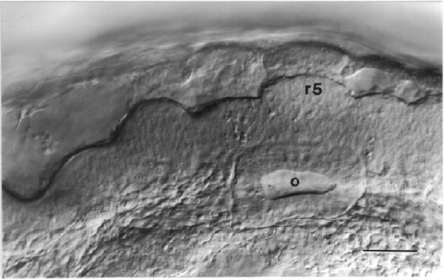

Modified from:
Kimmel et al., 1955.
Developmental Dynamics 203:253-310. Copyright © 1995 Wiley-Liss, Inc.
Reprinted only by permission of Wiley-Liss, a subsidiary of John Wiley &
Sons, Inc.
Fig. 25. Rhombomeres 2-6 at the 18-somite stage (18 h). Left side view with dorsal to the top and anterior the left. The odd-numbered rhombomeres, 3 and 5, are larger than the even-numbered ones, and in this embryo all of the rhombomeres are exceptionally prominent. The Nomarski view focuses on the left wall of the hindbrain, and the right wall is also visible behind it. The hindbrain roof opens just before this stage, forming the now large fourth ventricle between the two brain walls. The left hollow otic vesicle (o), containing 2 tiny newly-forming otoliths, is visible beside the brain at the level of rhombomere 5 (r5). Mesenchyme of the pharyngeal arch primordia lies more ventrally (see Fig. 31). From Hanneman et al. (1988). Scale bar: 50 µm.

Figure 25